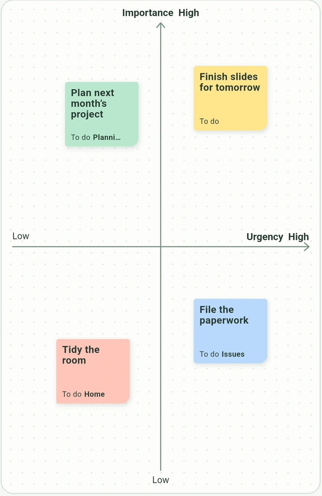
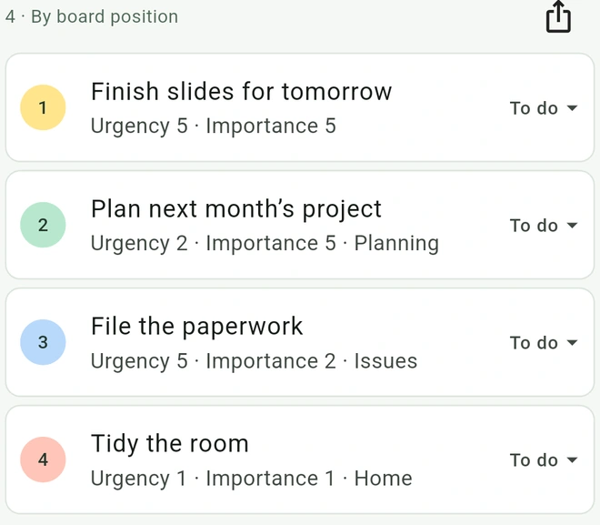

So much to do.
Where to start?
Arrange sticky notes by urgency and importance. PetaTodo turns their positions into a ranked to-do list.


From sticky notes to a ranked list
-
Write it down
Give each task its own sticky note, like “Finish slides for tomorrow.”
-
Place it on the board
Move urgent tasks right and important tasks up. Drag your notes to compare them at a glance.
-
Check your to-do list
The board sets the order automatically. Track each task as you get to work.

Frequently asked questions
What is the difference between urgency and importance?
Urgency is how soon a task needs attention. Importance is how much it affects your goals. Put slides due tomorrow toward the top right, and an important project for next month toward the top left.
How does PetaTodo rank tasks?
PetaTodo adds the urgency and importance scores from each note’s position. Higher totals come first. If totals are tied, the more important task comes first. Drag a note on the board to update its rank.
Do I need an account?
You can use PetaTodo without an account. Your board, notes, and attachments are stored on your device. PetaTodo does not send them to external servers.
How can I organize and export my tasks?
Use colors and labels to organize notes, and add formatted text or multiple files. Set a task to To do, In progress, or Done. Completed tasks stay in the to-do list. Export the list as CSV, PDF, or PNG, and the board as PDF or PNG.